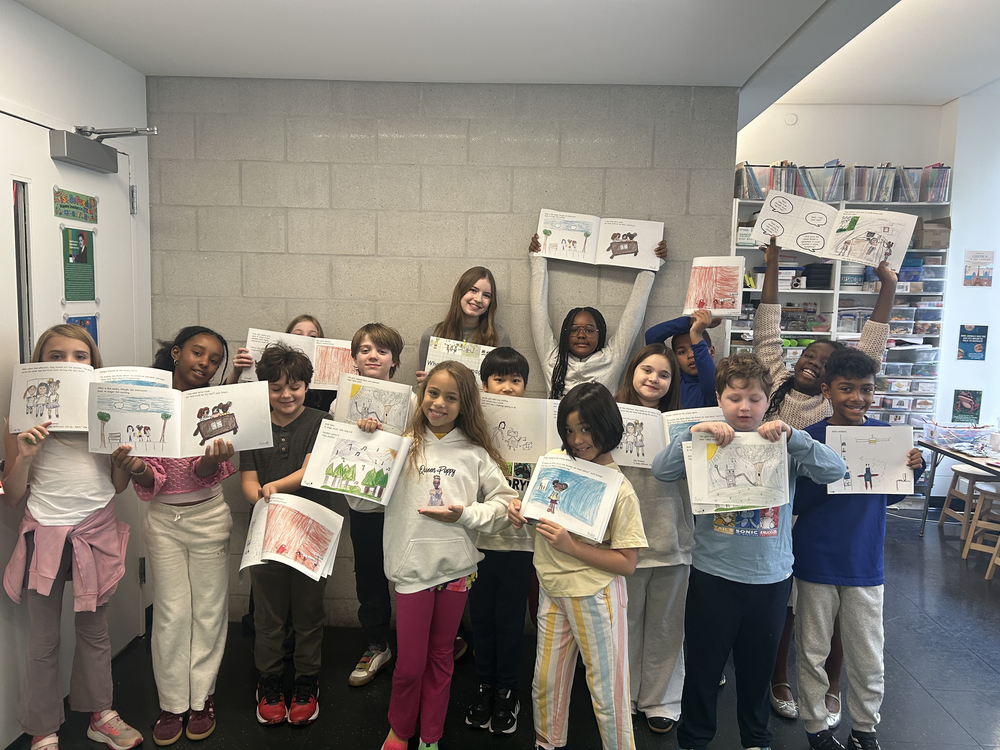

The Process
A question in a journal to a co-created children's book
As the only girl in a 15-person balsa wood structural design workshop, I experienced firsthand how easily female voices are minimized in STEM. I left with a core question: What else can be done to dismantle the gender gap in CS and engineering?
The "Default" Robot
While tutoring, I watched a student draw a robot, and noticed the surrounding kids instinctively referred to it using strictly male pronouns. I realized the male connotation in technology is a deeply ingrained default narrative taking root in early childhood.
Expert Fieldwork
To understand how to reverse this bias, I conducted primary research across the pipeline. I interviewed women at tech and engineering firms, consulted K-12 STEM Education PhDs, and surveyed lower-school teachers to isolate the exact values and messaging needed to empower young girls.


Co-Creating the Story
I wrote an original children's book about a group of girls building a tree-planting robot—intentionally showing them making mistakes and overcoming perfectionism. Partnering with a lower-school teacher, I read the text aloud to third-graders without visuals, prompting them to illustrate the scenes based on their own interpretations.

From Print to Practice
After compiling and printing the finalized books, I returned to the classroom to give each student a physical copy. We did a collaborative read-aloud, followed by a hands-on activity where students designed and built 3D sculptures of problem-solving robots—reframing themselves as active creators of global change.